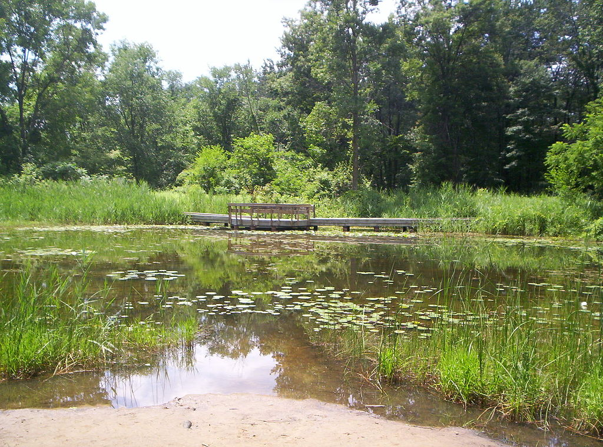

Ojibway Park (Ojibway Prairie Complex)
Address: 5200 Matchette Rd., Windsor, ON
sourced from Wikimedia Commons
Ojibway Park is the gateway to the larger Ojibway Prairie Complex, an extraordinary system of parks and nature reserves that protect one of North America's most significant tallgrass prairie and oak savanna ecosystems. This 160-acre park offers a profound nature experience right within the city limits. Visitors can explore extensive trail systems that wind through dense woodlands and open prairies, providing opportunities to observe a remarkable diversity of wildlife, including deer, migratory birds, and rare plant species. The on-site Ojibway Nature Centre provides educational exhibits and programming, enhancing the public's understanding and appreciation of this unique environment. It is a vital resource for nature lovers, hikers, bird watchers, and photographers. Ojibway Park is not just a recreational area; it is a living laboratory and a crucial sanctuary for biodiversity, representing a wilder side of Windsor that is both precious and accessible.